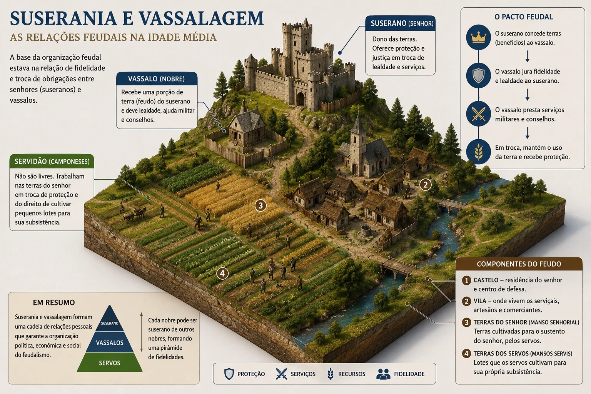
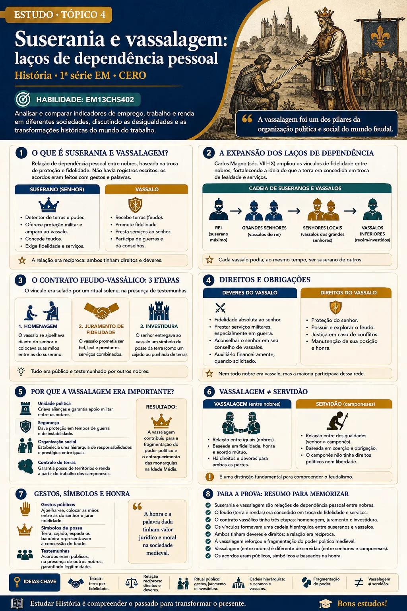

Tópico 4 de 9
Suserania e vassalagem
Laços de dependência pessoal entre nobres: como um contrato militar pulverizava o poder do rei.
Representação visual do sistema feudal

Clique na imagem para ampliar. Use os controles de zoom ou arraste a imagem quando ampliada.
Carlos Magno, procurando garantir a unidade do império, adotou a prática germânica de ceder terras e privilégios aos seus servidores em troca de apoio militar nas guerras. Entre o suserano, que doava a terra, e o vassalo, que a recebia, criava-se uma relação de vassalagem que previa direitos e obrigações recíprocos.
Terra em troca de fidelidade
Em uma época de guerras e invasões generalizadas na Europa, os próprios vassalos, preocupados com a segurança, passaram a doar terras e outros benefícios a outros chefes guerreiros em troca de proteção. Assim, ao mesmo tempo que eram vassalos do rei, ao doar terras tornavam-se suseranos de seus próprios vassalos. Com a morte de Carlos Magno, em 814, e a desagregação do império em vários reinos, os laços de vassalagem se disseminaram pelo Ocidente europeu, de forma mais acentuada em regiões como a França.
Uma coleção didática dá um exemplo que ajuda a visualizar a cadeia: se um duque doasse um feudo a um marquês, tornava-se seu suserano; se esse marquês doasse um feudo a um conde, passava a ser suserano do conde e continuava vassalo do duque. O mesmo indivíduo ocupava, ao mesmo tempo, as duas posições.
A cerimônia de investidura
A vassalagem se consolidou no século X com a instituição do contrato feudo-vassálico, acordo simbólico que unia dois nobres. A cerimônia tinha três momentos, e cada um deles cumpria uma função jurídica precisa:
- Homenagem — o futuro vassalo colocava suas mãos entre as mãos do suserano, gesto que representava a entrega da própria pessoa à proteção do outro.
- Juramento de fidelidade — com a mão sobre o Evangelho, o vassalo jurava fidelidade, colocando o compromisso sob garantia religiosa.
- Investidura — o suserano doava o feudo, simbolizado por um punhado de terra, um ramo de árvore, um bastão ou um estandarte.
O que cada lado devia ao outro
As obrigações eram concretas e recíprocas. O vassalo devia apresentar-se sempre que convocado pelo suserano; prestar ajuda financeira para o casamento da filha do senhor, para armar o filho cavaleiro e para pagar resgate caso fosse aprisionado; e comparecer ao tribunal para depor a seu favor. O suserano devia auxiliar o vassalo em caso de conflito e também depor em seu favor no tribunal.
Note que a reciprocidade é real — e que ela existe apenas entre nobres.
Consequência política: um rei sem reino
Essas relações de dependência pessoal enfraqueceram a monarquia. Entre o rei e a base da sociedade passou a existir uma longa cadeia de suseranos e vassalos, e o poder da monarquia acabou pulverizado nas mãos de vários senhores, cada um com muitos dependentes sob seu comando.
Repare no efeito prático: o camponês do feudo não devia obediência ao rei, e sim ao seu senhor imediato. A ordem de um monarca só chegava à base se cada elo da corrente decidisse repassá-la. Séculos depois, a formação dos Estados nacionais consistirá, em boa medida, em desmontar essa cadeia e restabelecer um vínculo direto entre o poder central e cada súdito — processo que os historiadores chamam de centralização monárquica.
Pesquise no Google
Verifique como o vínculo feudo-vassálico aparece descrito em fontes de época e em acervos digitais.
Marc Bloch e a vassalagem • Juramento medieval • Desagregação do Império Carolíngio • Centralização monárquica
📝 Atividades de aprendizagem
Reforce o que você estudou com questões sobre suserania, vassalagem e o sistema feudo-vassálico.
Textos-base e questões dissertativas sobre laços de dependência pessoal, contratos feudo-vassálicos e suas consequências políticas.
Guia de Estudos

Clique na imagem para ampliar. Use os controles de zoom ou arraste a imagem quando ampliada.